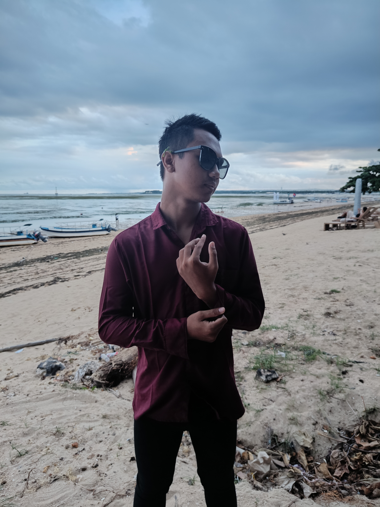

Magang Field Enggineer
PT HYPERNET INDODATA
Mempelajari dan melakukan tugas-tugas teknisi jaringan di lapangan.
Seorang mahasiswa Rekayasa Sistem Komputer yang berfokus pada arsitektur jaringan, sistem keamanan (CCTV & IP Cam), serta manajemen perangkat keras router (MikroTik/Cisco). Dikenal sebagai pribadi yang ramah, komunikatif, dan mudah beradaptasi, Saat ini sedang mendalami tentang infrastruktur jaringan dan cyber security.

Saya Bayu lahir dan besar di Badung, Bali. Memiliki latar belakang dan pengalaman kerja sebagai IT Support, saya terbiasa menangani pemecahan masalah teknis, pengelolaan sistem, dan infrastruktur IT. Di sisi lain, saya memiliki ketertarikan yang sangat besar pada dunia pengembangan web.
Bagi saya, website yang baik bukan hanya soal tampilan yang menarik, melainkan juga tentang struktur HTML yang semantik, aksesibel, serta mudah dirawat (maintainable). Pengalaman di bidang IT Support memberikan saya fondasi logika dan problem-solving yang kuat dalam menyelesaikan masalah lewat kode.
Saya adalah pribadi yang senang mempelajari hal baru, mampu bekerja secara mandiri maupun dalam tim, dan berkomitmen untuk terus berkembang. Target utama saya adalah menjadi seorang Network Engineer atau Software Developer yang mampu menggabungkan logika sistem, otomasi jaringan, dan pemecahan masalah berbasis kode secara seimbang.
| Jenjang | Institusi | Tahun |
|---|---|---|
| SMK | SMKN 1 Mas-Ubud | 2022 – 2025 |
| S1 | Institut Bisnis dan Teknologi Indonesia | 2025 – sekarang |
PT HYPERNET INDODATA
Mempelajari dan melakukan tugas-tugas teknisi jaringan di lapangan.
INIVIE HOSPITALITY
Melaksanakan troubleshooting dan pemeliharaan dikeempat properti Inivie.
CHAMPLUNG MAS HOTEL LEGIAN
Menangani masalah teknis dan pemeliharaan sistem IT di hotel.
Perancangan topologi, VLAN, dan routing untuk jaringan kantor skala kecil.
Pemasangan kamera, konfigurasi NVR, dan akses pantau jarak jauh.
Punya proyek, ingin order CCTV, atau sekadar ingin menyapa? Isi form di samping dan saya akan membalas secepatnya.
Email: dharmasaputra2334@gmail.com
WhatsApp: 0881-0375-92837